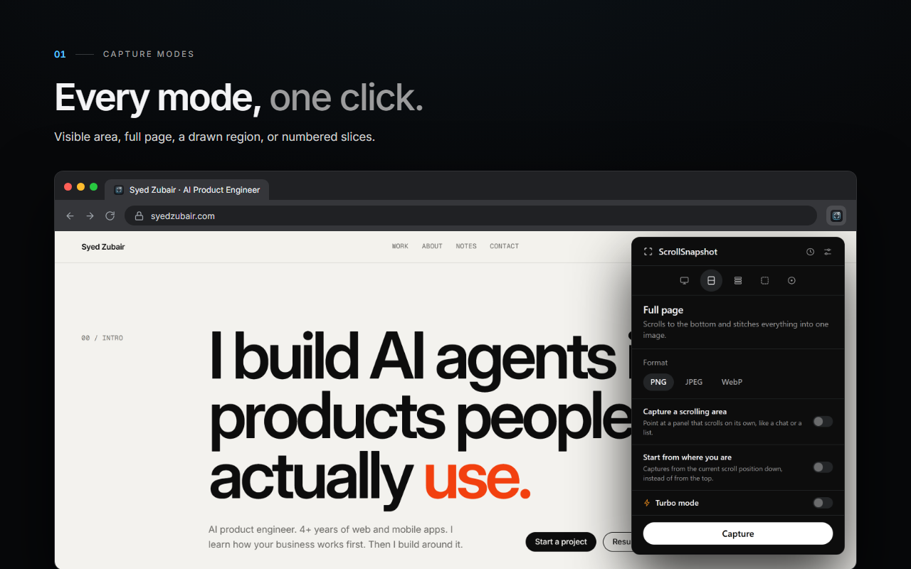
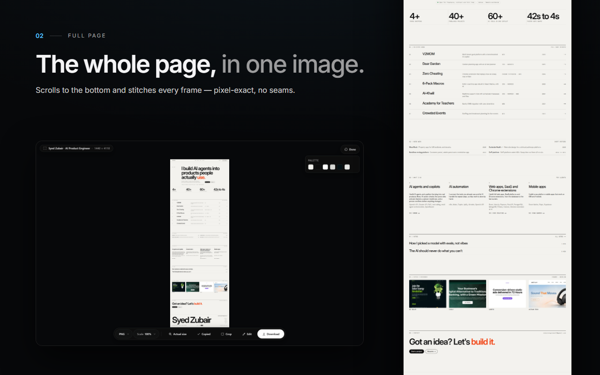
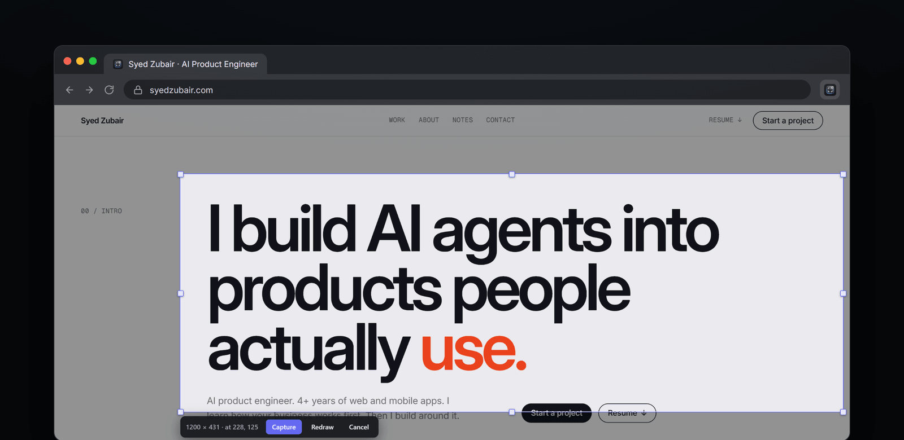
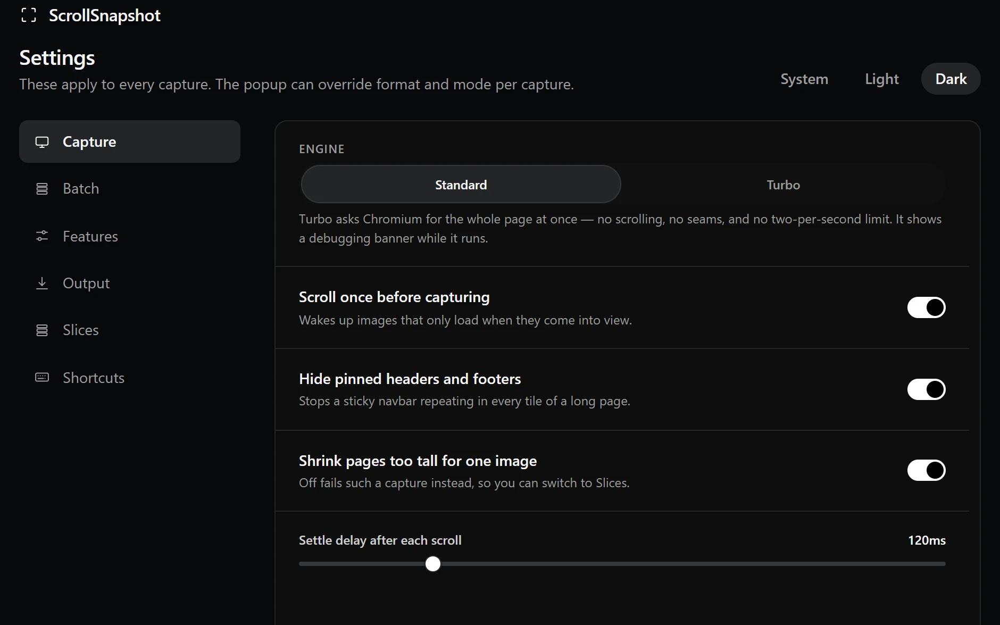
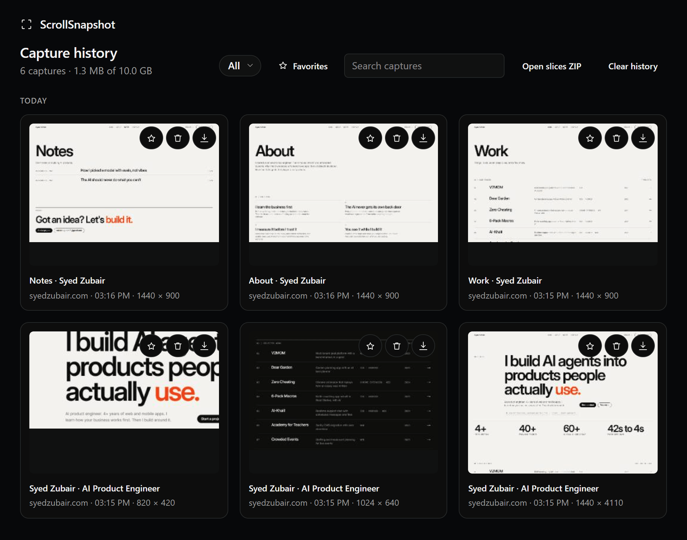

This screen
A clean capture of the viewport in front of you.
Read guideOne frame, the full scroll, a precise region, or fifty pages at once. Capture, refine, and export without leaving Chrome.
See how it worksJUMP TO A FEATURE
No matching workflow. Try “region” or “batch”.

Most screenshots make you choose between speed and control. ScrollSnapshot lets you decide how much of the page to keep, then finish the image where you captured it.
Explore the modesScrollSnapshot moves through the page and stitches the frames into a single capture. A page that exceeds one image’s limits can be saved as full-resolution slices instead.
FULL PAGE / PIXEL DETAIL
Draw a region, adjust it afterward, type exact coordinates, or point to an element on the page. The selection stays editable until you capture.
REGION / ELEMENT / COORDINATES
Crop, redact, annotate, label steps, and add text or pen marks. Then export as PNG, JPEG, WebP, or PDF. Your workflow stays in one place.
EDIT / COPY / DOWNLOAD
Start with the page you have. Choose the output you actually need.
A clean capture of the viewport in front of you.
Read guideTop to bottom, stitched into one image.
Read guideA ZIP of full-resolution pieces with page coordinates and overlap.
Read guideDraw it, type it, or choose an element. Then refine the selection.
Read guideCapture every ordinary web tab in the current window, or paste up to 50 addresses. One page failing does not stop the rest.
Read the batch guideSettings holds the choices you do not want to repeat: how a page is captured, what happens to the file, and which controls appear in the popup.

Pick Standard or Turbo. Let lazy content load, prevent repeated pinned headers, and tune the pause between scrolls.
Set a default format, choose automatic PNG copy, and control how many captures remain in local history.
Show or hide individual features, set slice size and overlap, and find the keyboard shortcuts in one place.
Short notes for the small decisions. Deeper guides for the modes with tradeoffs. Every shipped feature has its own page.
Explore all 24 guidesCaptures are processed and kept on your device. There is no ScrollSnapshot account, server, or analytics. Turn history off and only the current result remains until the next capture.
Read the privacy policy
A capture tool made for pages that deserve a closer look.
View on Chrome Web Store The store link opens once the listing is approved.